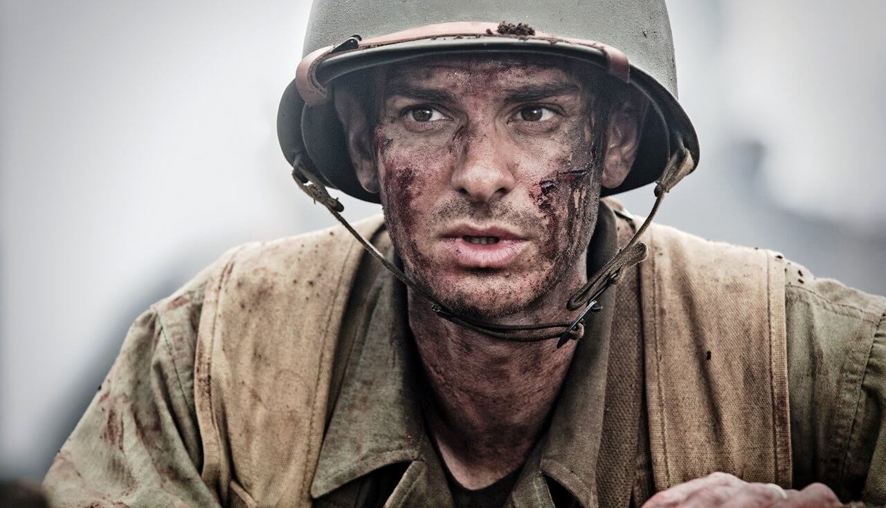
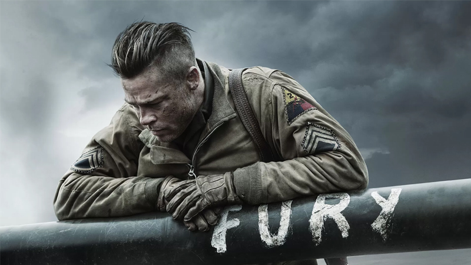
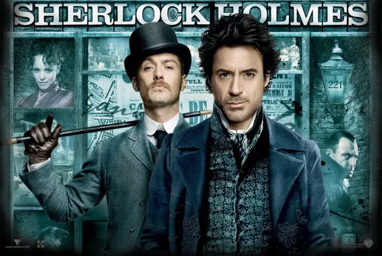
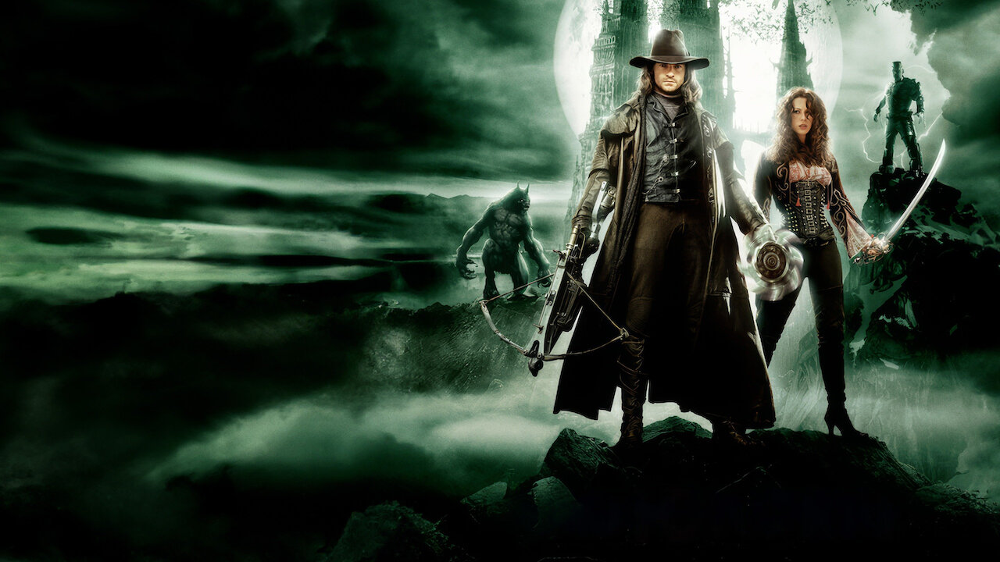
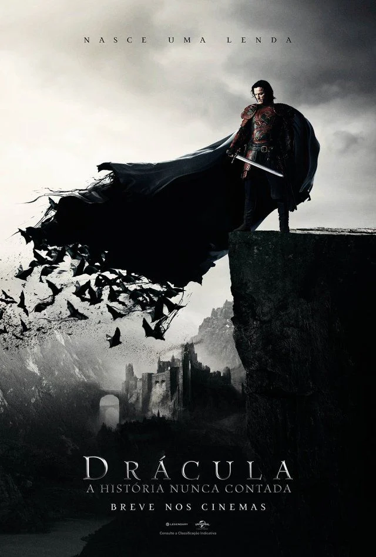

“Até o Último Homem” é um filme baseado em uma história real e acompanha a vida de Desmond Doss, um jovem que decide se alistar no exército dos Estados Unidos durante a Segunda Guerra Mundial. Mesmo indo para a guerra, Doss se recusa a pegar em armas por causa de suas crenças religiosas como adventista do sétimo dia. Isso faz com que ele sofra preconceito, punições e desconfiança por parte dos colegas e superiores durante o treinamento. Apesar das dificuldades, ele insiste em permanecer no exército como socorrista. Durante a batalha de Okinawa, especialmente no combate em Hacksaw Ridge, Doss demonstra extrema coragem ao resgatar sozinho dezenas de soldados feridos no campo de batalha, sem nunca usar uma arma. O filme mostra como sua fé, determinação e humanidade transformaram a visão das pessoas ao seu redor, levando-o a se tornar um herói de guerra e o primeiro objetor de consciência a receber a Medalha de Honra dos Estados Unidos.
Selecionar
Fury é um filme de guerra ambientado nos últimos dias da Segunda Guerra Mundial, acompanhando um grupo de soldados americanos que operam um tanque chamado “Fury”. Liderados pelo sargento Don Wardaddy Collier, a equipe enfrenta missões extremamente perigosas atrás das linhas inimigas na Alemanha nazista. A história também mostra a chegada de um novo recruta, Norman, que precisa aprender rapidamente a lidar com a brutalidade da guerra. Ao longo do filme, o grupo cria laços fortes enquanto enfrenta combates intensos, medo constante e perdas. No momento final, mesmo em grande desvantagem, eles decidem resistir até o fim contra tropas inimigas.
Selecionar
Sherlock Holmes acompanha o famoso detetive Sherlock Holmes e seu parceiro Dr John Watson na investigação de uma série de crimes misteriosos em Londres. Eles enfrentam o vilão Lord Blackwood, que parece ter poderes sobrenaturais após retornar da morte. Ao longo da trama, Holmes usa sua inteligência, observação e raciocínio lógico para desvendar o mistério, revelando que por trás dos acontecimentos há explicações racionais.
Selecionar
O filme acompanha o caçador de monstros Gabriel Van Helsing, que é enviado para a Transilvânia com a missão de derrotar o Conde Drácula. Lá, ele se une à corajosa Anna Valerious para enfrentar criaturas como lobisomens, vampiros e o próprio Drácula. Durante a jornada, Van Helsing descobre segredos sobre seu passado enquanto luta para impedir os planos de Drácula de criar um exército de monstros.
Selecionar
Dracula Untold conta a origem do famoso vampiro Drácula, focando na história de Vlad III Dracula, um príncipe que luta para proteger seu povo e sua família. Diante da ameaça do exército turco, Vlad faz um pacto sombrio para obter poderes sobrenaturais. Ele se transforma em uma criatura poderosa, mas passa a lutar contra sua própria natureza para não perder sua humanidade.
Selecionar